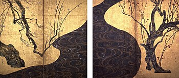

History of This Painting
The Great Wave off Kanagawa was painted sometime between 1829 and 1833. This painting depicts an enormous wave threatening three boats off the coast in the Sagami Bay while Mount Fuji rises in the background. Sometimes assumed to be a tsunami, the wave is more likely to be a large rogue wave.
History of This Painting
Matsudaira Takechiyo was born on January 31 1543 and died on june frist 1616 he was the founder and the frist shogun of the Tokugawa Shogunate of Japan which ruled from 1603 to 1868.
History of This Painting
Edo Period of Japan Lasted from 1603 to 1867 when japn was under the Tokugawa Shogunate which came to power after the chaos that happened durning the Sengoku Period. The Edo Period in Japan brought about econimic growth mpre strict social class to japan and making the country more and made the country more isolantionist than it already was.
Society
The Society durning the Edo Period in Japan in a big way the way you move up in the social order was based on your own personal skill and ambition rather than neptision. Neptision is way the people gain power because of their hertaige rather than hard work which is a vervy fallwed way to ruin a country or an thing for that matter. During this thime Japan divied it citizens into Separate Socail Class and it went as follows The Emperor (King), Court Nobility, Shogun, Daimyo, Samurai, Peasants and Merchants. In most if not all the the bottom two levels of the pyrimad made up of most of the population this was no differnet in Japan. While The higher levels made up less of the population but lived futher away a in more bigger and lavishi houses and castales which were rezervied for the most elite of the elite.
Foreign trade relations
Durning the Edo Period of Japna they engage with trade with outsiders but they were suspicious of outsiders but the Tokugawa Shogunate realised the porift they made Edo into huge port city. They did this becasue teh eupoapains loved ports and they were japan biggest tardes so they elsatibest many ports around japan one of the most imporant ports was in KyushuReligion and Pholisoshe
The Religions that they had during the edo period was Confucianism, Buddhism, and Neo-Confucianism. Neo-Confucianism was spearding alot durning the edo period because before the Edo period of Japan the countrys had a lot of buddhist who kept the knowlage of confusesion studies alive. When the Tokugawa Shogunate took power the buddhist had no more reliogous controll over the teaching so it became vervy popular wiht the people. What is confuseion it was a ancient chinese belief system which foucsed ojn the imporantace of one's ethics and morality and it has no gods. Neo-Confucianism was more simplifyed than Confucianism cause it took out all the mystical elements it took from taosim and Buddhism and foucsed more on the main belives of the religon.
Culture
One of the best parts culture in edo japan and it is one of my favorit parts of the edo period is the art because it is so beautiful and insprining and I just lerning about history and the context of anything in gernal. One of my favorite patinigs from this period is The Great Wave of Kanagawa. This is one of the most Famaous painting from this era it was made Famaous by. Another Panting from this era was the Red and White Plum Blossoms by Ogata Kōrin,  This Painting was painted in the early 18 centure by Ogata Korin. Ogata was a byobo painter byobo was a type of japnes folding borads that feauted desings on them.
I hope you have enjoyed my Website on the Edo period please check me out on Youtube Instagram.